Two-speaker separation: Librivox, 2 mics
Example 1
| Mixture |
|
|
|---|---|---|
| Ground-truth sources |

SI-SDR = -15.81 dB |

SI-SDR = 16.71 dB |
| Method | Separated source 0 | Separated source 1 |
| TI 64ms x 4 frames, BF2 |
SI-SDR = 4.99 dB |
SI-SDR = 22.28 dB |
| TI 64ms x 4 frames, MN3 |
SI-SDR = 6.11 dB |
SI-SDR = 23.69 dB |
| TI 64ms x 4 frames, block size 3.2s, BF2 |
SI-SDR = 5.74 dB |
SI-SDR = 23.11 dB |
| TI 64ms x 4 frames, block size 3.2s, MN3 |
SI-SDR = 6.12 dB |
SI-SDR = 23.73 dB |
| TV 128ms x 2 frames, BF2 |
SI-SDR = 5.83 dB |
SI-SDR = 23.70 dB |
| TV 128ms x 2 frames, MN3 |
SI-SDR = 5.24 dB |
SI-SDR = 23.04 dB |
Example 2
| Mixture |

|
|
|---|---|---|
| Ground-truth sources |

SI-SDR = -9.98 dB |

SI-SDR = 9.53 dB |
| Method | Separated source 0 | Separated source 1 |
| TI 64ms x 4 frames, BF2 |
SI-SDR = 8.41 dB |
SI-SDR = 18.03 dB |
| TI 64ms x 4 frames, MN3 |

SI-SDR = 10.34 dB |
SI-SDR = 20.37 dB |
| TI 64ms x 4 frames, block size 3.2s, BF2 |
SI-SDR = 9.41 dB |
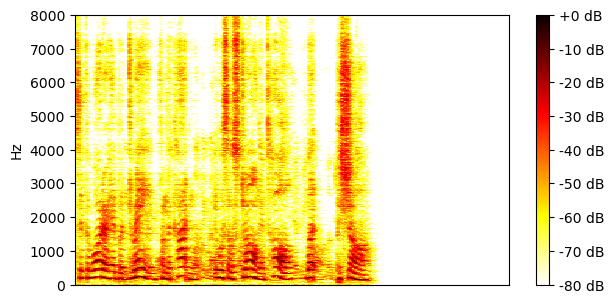
SI-SDR = 19.00 dB |
| TI 64ms x 4 frames, block size 3.2s, MN3 |
SI-SDR = 9.66 dB |
SI-SDR = 19.71 dB |
| TV 128ms x 2 frames, BF2 |
SI-SDR = 11.06 dB |
SI-SDR = 20.93 dB |
| TV 128ms x 2 frames, MN3 |
SI-SDR = 9.29 dB |
SI-SDR = 19.41 dB |
Example 3
| Mixture |

|
|
|---|---|---|
| Ground-truth sources |
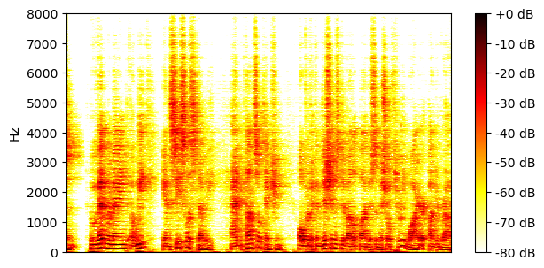
SI-SDR = 10.52 dB |
SI-SDR = -10.74 dB |
| Method | Separated source 0 | Separated source 1 |
| TI 64ms x 4 frames, BF2 |
SI-SDR = 18.20 dB |
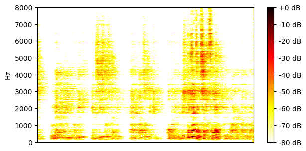
SI-SDR = 7.61 dB |
| TI 64ms x 4 frames, MN3 |
SI-SDR = 21.48 dB |
SI-SDR = 10.61 dB |
| TI 64ms x 4 frames, block size 3.2s, BF2 |
SI-SDR = 19.19 dB |
SI-SDR = 9.62 dB |
| TI 64ms x 4 frames, block size 3.2s, MN3 |
SI-SDR = 21.06 dB |
SI-SDR = 10.15 dB |
| TV 128ms x 2 frames, BF2 |
SI-SDR = 19.35 dB |
SI-SDR = 9.92 dB |
| TV 128ms x 2 frames, MN3 |
SI-SDR = 20.72 dB |
SI-SDR = 9.77 dB |
Example 4
| Mixture |

|
|
|---|---|---|
| Ground-truth sources |

SI-SDR = 9.57 dB |

SI-SDR = -8.79 dB |
| Method | Separated source 0 | Separated source 1 |
| TI 64ms x 4 frames, BF2 |
SI-SDR = 14.18 dB |
SI-SDR = 3.12 dB |
| TI 64ms x 4 frames, MN3 |
SI-SDR = 14.93 dB |
SI-SDR = 4.37 dB |
| TI 64ms x 4 frames, block size 3.2s, BF2 |
SI-SDR = 15.50 dB |
SI-SDR = 4.93 dB |
| TI 64ms x 4 frames, block size 3.2s, MN3 |
SI-SDR = 15.61 dB |
SI-SDR = 5.24 dB |
| TV 128ms x 2 frames, BF2 |
SI-SDR = 14.55 dB |
SI-SDR = 3.97 dB |
| TV 128ms x 2 frames, MN3 |
SI-SDR = 14.55 dB |
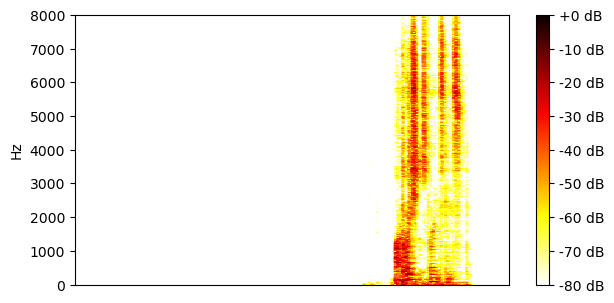
SI-SDR = 3.86 dB |
Example 5
| Mixture |

|
|
|---|---|---|
| Ground-truth sources |

SI-SDR = -6.63 dB |

SI-SDR = 6.44 dB |
| Method | Separated source 0 | Separated source 1 |
| TI 64ms x 4 frames, BF2 |
SI-SDR = 3.76 dB |
SI-SDR = 11.31 dB |
| TI 64ms x 4 frames, MN3 |
SI-SDR = 7.83 dB |
SI-SDR = 14.82 dB |
| TI 64ms x 4 frames, block size 3.2s, BF2 |
SI-SDR = -1.92 dB |

SI-SDR = 7.35 dB |
| TI 64ms x 4 frames, block size 3.2s, MN3 |
SI-SDR = 1.56 dB |
SI-SDR = 9.68 dB |
| TV 128ms x 2 frames, BF2 |
SI-SDR = -13.82 dB |
SI-SDR = 0.04 dB |
| TV 128ms x 2 frames, MN3 |
SI-SDR = -4.53 dB |
SI-SDR = 2.50 dB |
Example 6
| Mixture |

|
|
|---|---|---|
| Ground-truth sources |
SI-SDR = -8.62 dB |
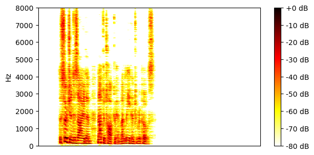
SI-SDR = 8.61 dB |
| Method | Separated source 0 | Separated source 1 |
| TI 64ms x 4 frames, BF2 |
SI-SDR = 10.18 dB |
SI-SDR = 18.72 dB |
| TI 64ms x 4 frames, MN3 |
SI-SDR = 12.89 dB |
SI-SDR = 21.70 dB |
| TI 64ms x 4 frames, block size 3.2s, BF2 |
SI-SDR = 11.25 dB |
SI-SDR = 20.00 dB |
| TI 64ms x 4 frames, block size 3.2s, MN3 |
SI-SDR = 11.59 dB |
SI-SDR = 20.43 dB |
| TV 128ms x 2 frames, BF2 |
SI-SDR = 12.04 dB |
SI-SDR = 20.94 dB |
| TV 128ms x 2 frames, MN3 |
SI-SDR = 10.93 dB |
SI-SDR = 19.83 dB |
Example 7
| Mixture |

|
|
|---|---|---|
| Ground-truth sources |

SI-SDR = 6.21 dB |
SI-SDR = -6.42 dB |
| Method | Separated source 0 | Separated source 1 |
| TI 64ms x 4 frames, BF2 |
SI-SDR = 13.64 dB |
SI-SDR = 6.93 dB |
| TI 64ms x 4 frames, MN3 |
SI-SDR = 15.04 dB |
SI-SDR = 8.37 dB |
| TI 64ms x 4 frames, block size 3.2s, BF2 |
SI-SDR = 10.61 dB |
SI-SDR = 3.07 dB |
| TI 64ms x 4 frames, block size 3.2s, MN3 |
SI-SDR = 12.20 dB |
SI-SDR = 5.14 dB |
| TV 128ms x 2 frames, BF2 |

SI-SDR = 12.71 dB |

SI-SDR = 5.67 dB |
| TV 128ms x 2 frames, MN3 |
SI-SDR = 11.94 dB |
SI-SDR = 4.84 dB |
Example 8
| Mixture |

|
|
|---|---|---|
| Ground-truth sources |

SI-SDR = 5.40 dB |

SI-SDR = -5.33 dB |
| Method | Separated source 0 | Separated source 1 |
| TI 64ms x 4 frames, BF2 |
SI-SDR = 13.20 dB |

SI-SDR = 7.96 dB |
| TI 64ms x 4 frames, MN3 |
SI-SDR = 15.28 dB |
SI-SDR = 9.59 dB |
| TI 64ms x 4 frames, block size 3.2s, BF2 |
SI-SDR = 12.81 dB |
SI-SDR = 6.90 dB |
| TI 64ms x 4 frames, block size 3.2s, MN3 |

SI-SDR = 14.13 dB |
SI-SDR = 8.31 dB |
| TV 128ms x 2 frames, BF2 |
SI-SDR = 14.29 dB |
SI-SDR = 8.44 dB |
| TV 128ms x 2 frames, MN3 |

SI-SDR = 13.85 dB |
SI-SDR = 8.01 dB |
Example 9
| Mixture |

|
|
|---|---|---|
| Ground-truth sources |

SI-SDR = 9.79 dB |

SI-SDR = -9.69 dB |
| Method | Separated source 0 | Separated source 1 |
| TI 64ms x 4 frames, BF2 |
SI-SDR = 16.45 dB |
SI-SDR = 5.97 dB |
| TI 64ms x 4 frames, MN3 |
SI-SDR = 20.51 dB |
SI-SDR = 10.40 dB |
| TI 64ms x 4 frames, block size 3.2s, BF2 |
SI-SDR = 18.53 dB |
SI-SDR = 8.12 dB |
| TI 64ms x 4 frames, block size 3.2s, MN3 |
SI-SDR = 20.07 dB |
SI-SDR = 9.91 dB |
| TV 128ms x 2 frames, BF2 |
SI-SDR = 19.43 dB |
SI-SDR = 8.94 dB |
| TV 128ms x 2 frames, MN3 |
SI-SDR = 19.56 dB |
SI-SDR = 9.37 dB |
Example 10
| Mixture |

|
|
|---|---|---|
| Ground-truth sources |

SI-SDR = 5.23 dB |

SI-SDR = -5.18 dB |
| Method | Separated source 0 | Separated source 1 |
| TI 64ms x 4 frames, BF2 |
SI-SDR = 13.44 dB |
SI-SDR = 8.11 dB |
| TI 64ms x 4 frames, MN3 |
SI-SDR = 17.64 dB |
SI-SDR = 12.25 dB |
| TI 64ms x 4 frames, block size 3.2s, BF2 |
SI-SDR = 14.57 dB |
SI-SDR = 9.43 dB |
| TI 64ms x 4 frames, block size 3.2s, MN3 |
SI-SDR = 16.87 dB |
SI-SDR = 11.44 dB |
| TV 128ms x 2 frames, BF2 |
SI-SDR = 16.02 dB |
SI-SDR = 11.14 dB |
| TV 128ms x 2 frames, MN3 |
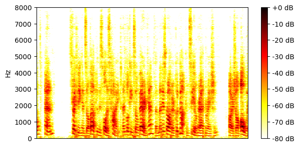
SI-SDR = 16.56 dB |
SI-SDR = 11.12 dB |
Example 11
| Mixture |

|
|
|---|---|---|
| Ground-truth sources |

SI-SDR = -4.35 dB |

SI-SDR = 4.35 dB |
| Method | Separated source 0 | Separated source 1 |
| TI 64ms x 4 frames, BF2 |
SI-SDR = 9.99 dB |
SI-SDR = 14.53 dB |
| TI 64ms x 4 frames, MN3 |
SI-SDR = 21.76 dB |
SI-SDR = 26.13 dB |
| TI 64ms x 4 frames, block size 3.2s, BF2 |
SI-SDR = 17.38 dB |
SI-SDR = 21.78 dB |
| TI 64ms x 4 frames, block size 3.2s, MN3 |
SI-SDR = 20.43 dB |
SI-SDR = 24.80 dB |
| TV 128ms x 2 frames, BF2 |
SI-SDR = 20.20 dB |
SI-SDR = 24.62 dB |
| TV 128ms x 2 frames, MN3 |
SI-SDR = 20.43 dB |
SI-SDR = 24.81 dB |
Example 12
| Mixture |

|
|
|---|---|---|
| Ground-truth sources |

SI-SDR = -11.18 dB |

SI-SDR = 11.06 dB |
| Method | Separated source 0 | Separated source 1 |
| TI 64ms x 4 frames, BF2 |
SI-SDR = 3.25 dB |
SI-SDR = 15.76 dB |
| TI 64ms x 4 frames, MN3 |
SI-SDR = 8.75 dB |
SI-SDR = 20.32 dB |
| TI 64ms x 4 frames, block size 3.2s, BF2 |
SI-SDR = 6.76 dB |
SI-SDR = 18.32 dB |
| TI 64ms x 4 frames, block size 3.2s, MN3 |

SI-SDR = 8.21 dB |
SI-SDR = 19.85 dB |
| TV 128ms x 2 frames, BF2 |
SI-SDR = 7.96 dB |
SI-SDR = 19.18 dB |
| TV 128ms x 2 frames, MN3 |
SI-SDR = 7.94 dB |
SI-SDR = 19.62 dB |
Example 13
| Mixture |

|
|
|---|---|---|
| Ground-truth sources |

SI-SDR = 2.99 dB |
SI-SDR = -2.99 dB |
| Method | Separated source 0 | Separated source 1 |
| TI 64ms x 4 frames, BF2 |
SI-SDR = 14.42 dB |
SI-SDR = 11.32 dB |
| TI 64ms x 4 frames, MN3 |
SI-SDR = 78.21 dB |

SI-SDR = 75.22 dB |
| TI 64ms x 4 frames, block size 3.2s, BF2 |
SI-SDR = 47.80 dB |
SI-SDR = 46.02 dB |
| TI 64ms x 4 frames, block size 3.2s, MN3 |
SI-SDR = 75.98 dB |
SI-SDR = 72.99 dB |
| TV 128ms x 2 frames, BF2 |
SI-SDR = 44.71 dB |
SI-SDR = 44.43 dB |
| TV 128ms x 2 frames, MN3 |
SI-SDR = 75.52 dB |
SI-SDR = 72.55 dB |
Example 14
| Mixture |

|
|
|---|---|---|
| Ground-truth sources |

SI-SDR = -2.09 dB |
SI-SDR = 2.24 dB |
| Method | Separated source 0 | Separated source 1 |
| TI 64ms x 4 frames, BF2 |
SI-SDR = 10.94 dB |
SI-SDR = 13.39 dB |
| TI 64ms x 4 frames, MN3 |
SI-SDR = 14.69 dB |
SI-SDR = 16.94 dB |
| TI 64ms x 4 frames, block size 3.2s, BF2 |
SI-SDR = 9.70 dB |
SI-SDR = 11.94 dB |
| TI 64ms x 4 frames, block size 3.2s, MN3 |
SI-SDR = 12.54 dB |
SI-SDR = 14.80 dB |
| TV 128ms x 2 frames, BF2 |
SI-SDR = 13.21 dB |
SI-SDR = 15.33 dB |
| TV 128ms x 2 frames, MN3 |
SI-SDR = 13.27 dB |

SI-SDR = 15.48 dB |
Example 15
| Mixture |

|
|
|---|---|---|
| Ground-truth sources |
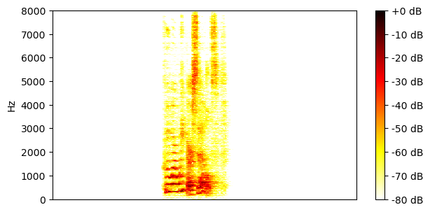
SI-SDR = 10.62 dB |

SI-SDR = -11.09 dB |
| Method | Separated source 0 | Separated source 1 |
| TI 64ms x 4 frames, BF2 |
SI-SDR = 16.80 dB |
SI-SDR = 5.38 dB |
| TI 64ms x 4 frames, MN3 |
SI-SDR = 21.15 dB |
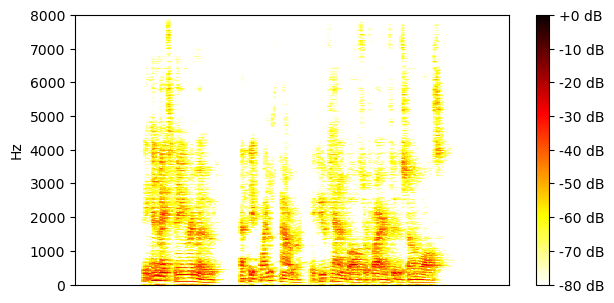
SI-SDR = 10.08 dB |
| TI 64ms x 4 frames, block size 3.2s, BF2 |
SI-SDR = 18.64 dB |
SI-SDR = 7.46 dB |
| TI 64ms x 4 frames, block size 3.2s, MN3 |
SI-SDR = 20.25 dB |
SI-SDR = 9.12 dB |
| TV 128ms x 2 frames, BF2 |
SI-SDR = 17.20 dB |
SI-SDR = 5.44 dB |
| TV 128ms x 2 frames, MN3 |
SI-SDR = 17.36 dB |
SI-SDR = 5.72 dB |
Example 16
| Mixture |

|
|
|---|---|---|
| Ground-truth sources |
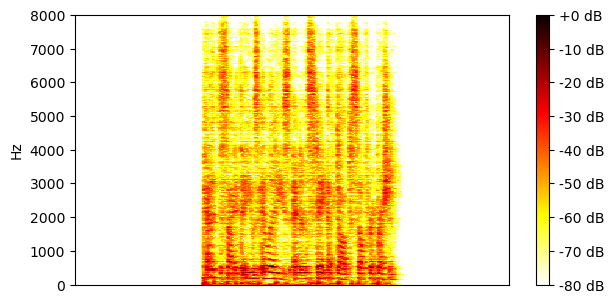
SI-SDR = -6.56 dB |

SI-SDR = 6.26 dB |
| Method | Separated source 0 | Separated source 1 |
| TI 64ms x 4 frames, BF2 |
SI-SDR = 8.16 dB |
SI-SDR = 14.73 dB |
| TI 64ms x 4 frames, MN3 |

SI-SDR = 9.73 dB |
SI-SDR = 16.37 dB |
| TI 64ms x 4 frames, block size 3.2s, BF2 |
SI-SDR = 9.19 dB |
SI-SDR = 15.56 dB |
| TI 64ms x 4 frames, block size 3.2s, MN3 |
SI-SDR = 9.26 dB |
SI-SDR = 15.92 dB |
| TV 128ms x 2 frames, BF2 |
SI-SDR = 10.21 dB |
SI-SDR = 16.79 dB |
| TV 128ms x 2 frames, MN3 |
SI-SDR = 9.02 dB |
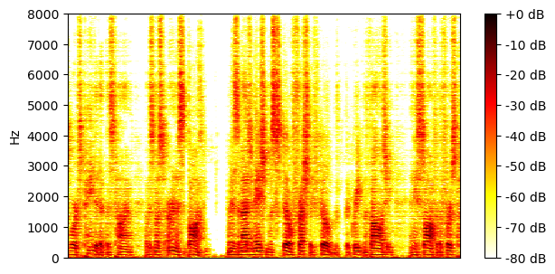
SI-SDR = 15.71 dB |
Example 17
| Mixture |

|
|
|---|---|---|
| Ground-truth sources |

SI-SDR = -27.47 dB |

SI-SDR = 27.30 dB |
| Method | Separated source 0 | Separated source 1 |
| TI 64ms x 4 frames, BF2 |
SI-SDR = -6.69 dB |
SI-SDR = 27.84 dB |
| TI 64ms x 4 frames, MN3 |
SI-SDR = -9.97 dB |
SI-SDR = 27.33 dB |
| TI 64ms x 4 frames, block size 3.2s, BF2 |
SI-SDR = -7.76 dB |
SI-SDR = 27.55 dB |
| TI 64ms x 4 frames, block size 3.2s, MN3 |

SI-SDR = -14.12 dB |
SI-SDR = 27.38 dB |
| TV 128ms x 2 frames, BF2 |
SI-SDR = -22.70 dB |
SI-SDR = 27.21 dB |
| TV 128ms x 2 frames, MN3 |
SI-SDR = -16.29 dB |
SI-SDR = 27.31 dB |
Example 18
| Mixture |

|
|
|---|---|---|
| Ground-truth sources |

SI-SDR = 9.32 dB |

SI-SDR = -9.15 dB |
| Method | Separated source 0 | Separated source 1 |
| TI 64ms x 4 frames, BF2 |
SI-SDR = 15.87 dB |
SI-SDR = 5.71 dB |
| TI 64ms x 4 frames, MN3 |
SI-SDR = 19.90 dB |
SI-SDR = 10.24 dB |
| TI 64ms x 4 frames, block size 3.2s, BF2 |
SI-SDR = 17.28 dB |
SI-SDR = 7.39 dB |
| TI 64ms x 4 frames, block size 3.2s, MN3 |
SI-SDR = 18.67 dB |
SI-SDR = 8.90 dB |
| TV 128ms x 2 frames, BF2 |
SI-SDR = 18.37 dB |
SI-SDR = 8.61 dB |
| TV 128ms x 2 frames, MN3 |
SI-SDR = 18.40 dB |
SI-SDR = 8.62 dB |
Example 19
| Mixture |

|
|
|---|---|---|
| Ground-truth sources |

SI-SDR = -7.08 dB |

SI-SDR = 7.12 dB |
| Method | Separated source 0 | Separated source 1 |
| TI 64ms x 4 frames, BF2 |
SI-SDR = 8.87 dB |
SI-SDR = 16.09 dB |
| TI 64ms x 4 frames, MN3 |
SI-SDR = 14.35 dB |
SI-SDR = 21.60 dB |
| TI 64ms x 4 frames, block size 3.2s, BF2 |
SI-SDR = 11.73 dB |
SI-SDR = 18.71 dB |
| TI 64ms x 4 frames, block size 3.2s, MN3 |
SI-SDR = 13.28 dB |
SI-SDR = 20.57 dB |
| TV 128ms x 2 frames, BF2 |
SI-SDR = 14.93 dB |
SI-SDR = 21.48 dB |
| TV 128ms x 2 frames, MN3 |
SI-SDR = 13.53 dB |
SI-SDR = 20.79 dB |
Example 20
| Mixture |

|
|
|---|---|---|
| Ground-truth sources |
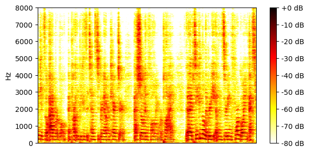
SI-SDR = 19.49 dB |

SI-SDR = -19.64 dB |
| Method | Separated source 0 | Separated source 1 |
| TI 64ms x 4 frames, BF2 |
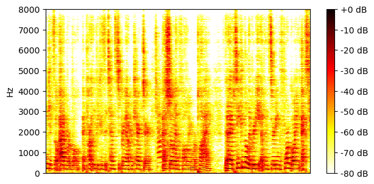
SI-SDR = 21.85 dB |

SI-SDR = 1.78 dB |
| TI 64ms x 4 frames, MN3 |
SI-SDR = 28.06 dB |
SI-SDR = 7.93 dB |
| TI 64ms x 4 frames, block size 3.2s, BF2 |
SI-SDR = 21.50 dB |
SI-SDR = 4.83 dB |
| TI 64ms x 4 frames, block size 3.2s, MN3 |
SI-SDR = 27.05 dB |
SI-SDR = 6.83 dB |
| TV 128ms x 2 frames, BF2 |

SI-SDR = 21.84 dB |
SI-SDR = 6.32 dB |
| TV 128ms x 2 frames, MN3 |
SI-SDR = 26.56 dB |
SI-SDR = 6.29 dB |